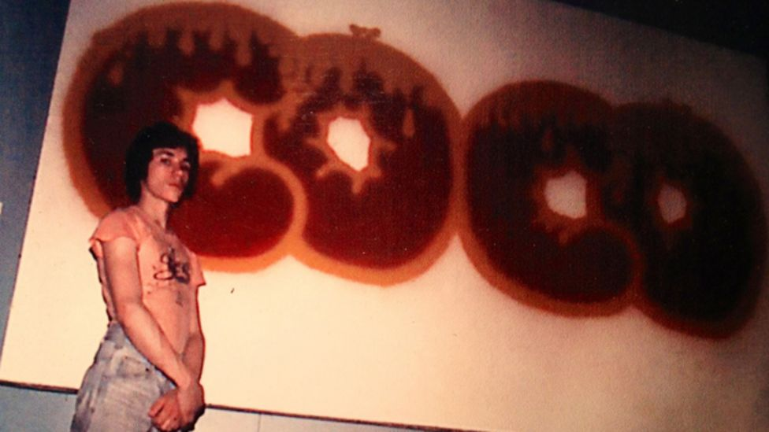

Forty years ago author Norman Mailer published an essay in which he declared the graffiti of the New York subway to be "The Great Art of the 70s". But what happened to the artists and why is there no subway graffiti any more? "It started with someone just writing their name - someone saw that, and added on to it," recalls New York graffiti artist Nicer, born Hector Nazario. "Letters going in front of letters, coming back through a letter, behind a letter, going across a letter... the subways became our playground," adds Riff170. New York in 1974 was a city in crisis. The Mayor, Abe Beame, slashed the city's budget in a bid to stave off bankruptcy, which meant laying off school teachers, police officers and subway staff. "They was taking the money from the schools, there was a lot of corruption here, in this community, and so they took the after-school programmes away, and there was no outlets for this. So the outlet became our city," says Bronx-born designer Eric Orr. "And for the artist guys, those type of creative guys, it became the paint, the aerosol and the marker."
